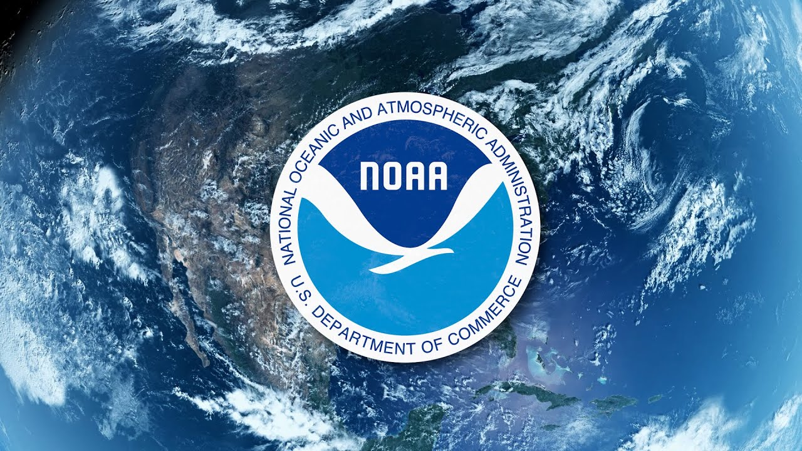
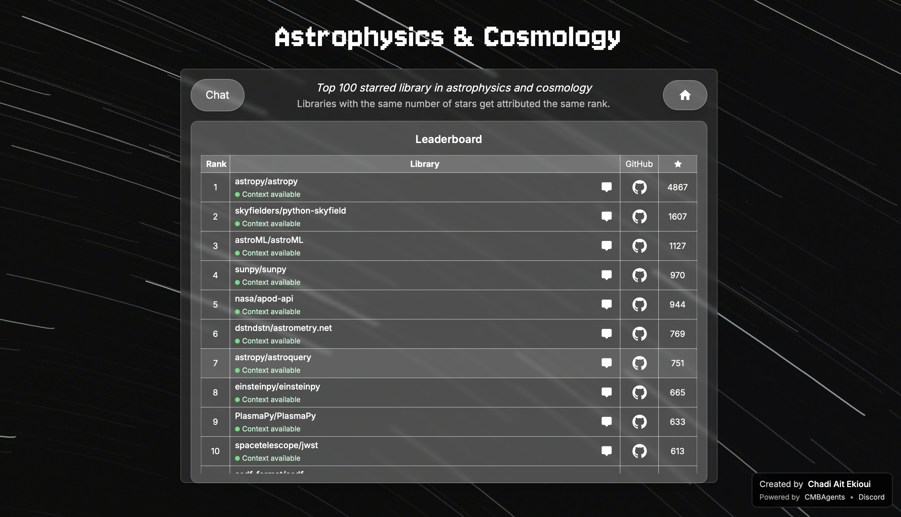

My Projects

Natural Disaster Damage Prediction
Data Science and Machine Learning project analyzing NOAA datasets to predict potential economic and human damage from natural disasters. Built and evaluated multiple machine learning models using Python, Pandas, and Scikit-learn to analyze patterns and make accurate predictions.
September 2025 — December 2025 | Dublin, Ireland

ContextMaker - LLM-ready Documentation
Developed a Python package for generating LLM-ready documentation to accelerate discovery in cosmology. This tool was created during my research at the Cavendish Laboratory, University of Cambridge, and contributed to an ICML 2025 article. ContextMaker helps researchers efficiently prepare documentation for Large Language Model interactions.
June 2025 — August 2025 | Cambridge, UK

Synapses - Scientific Library Query Platform
Created Synapses, a web platform to query the top 100 cosmology Python libraries and interact with AI models across multiple scientific domains. This project enables researchers to efficiently discover and explore scientific libraries while leveraging AI capabilities for enhanced research workflows.
June 2025 — August 2025 | Cambridge, UK